Snorkel with turtles
Shallow sites along Meno’s east coast suit beginners—early mornings mean glassy water and fewer day-trip crowds.
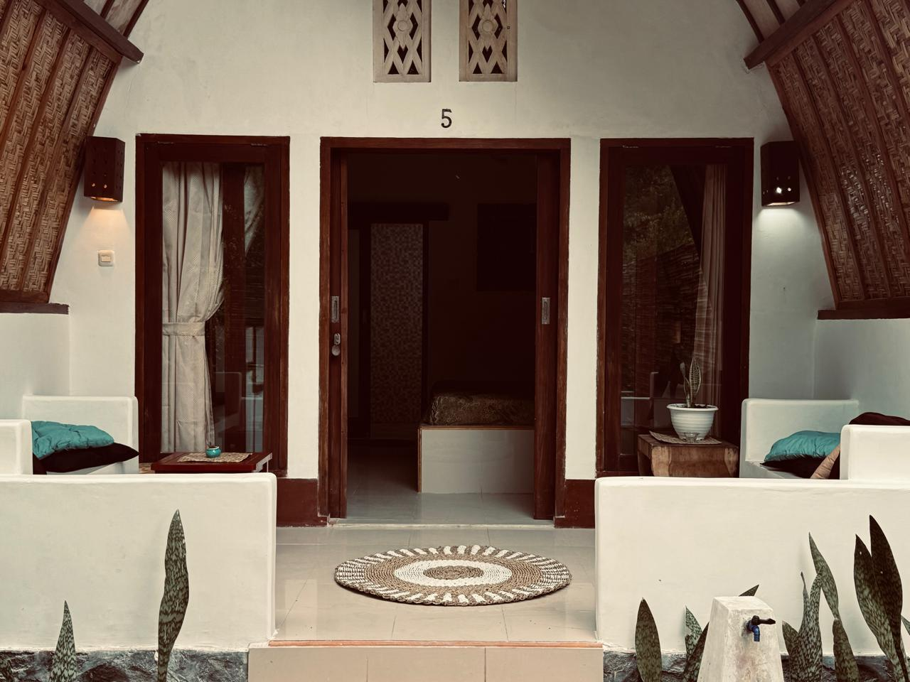
Gili Meno · Lombok
Sasak-style lumbung bungalows two minutes from the harbour—quiet, tropical, and perfectly placed for turtles, diving, and sunset walks.
Curved roofs, cool tile floors, and private verandas. AC, mosquito nets, and ensuite bathrooms—simple island comfort without the noise of the party Gilis.
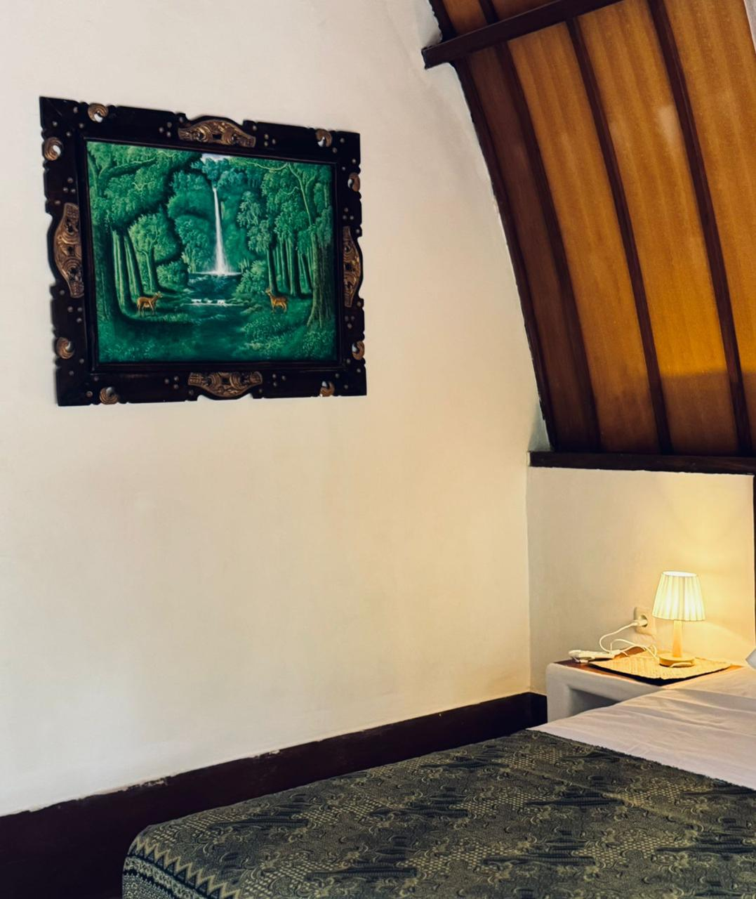
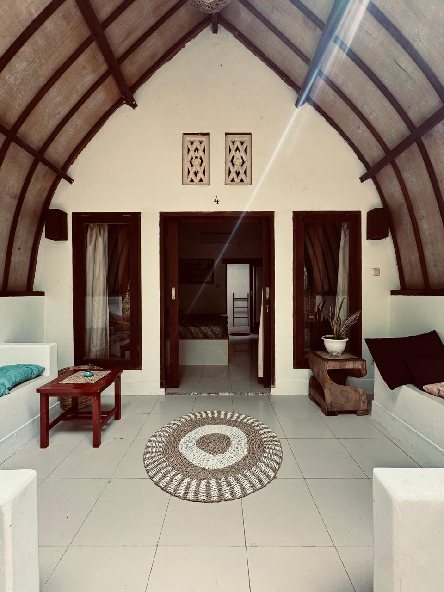
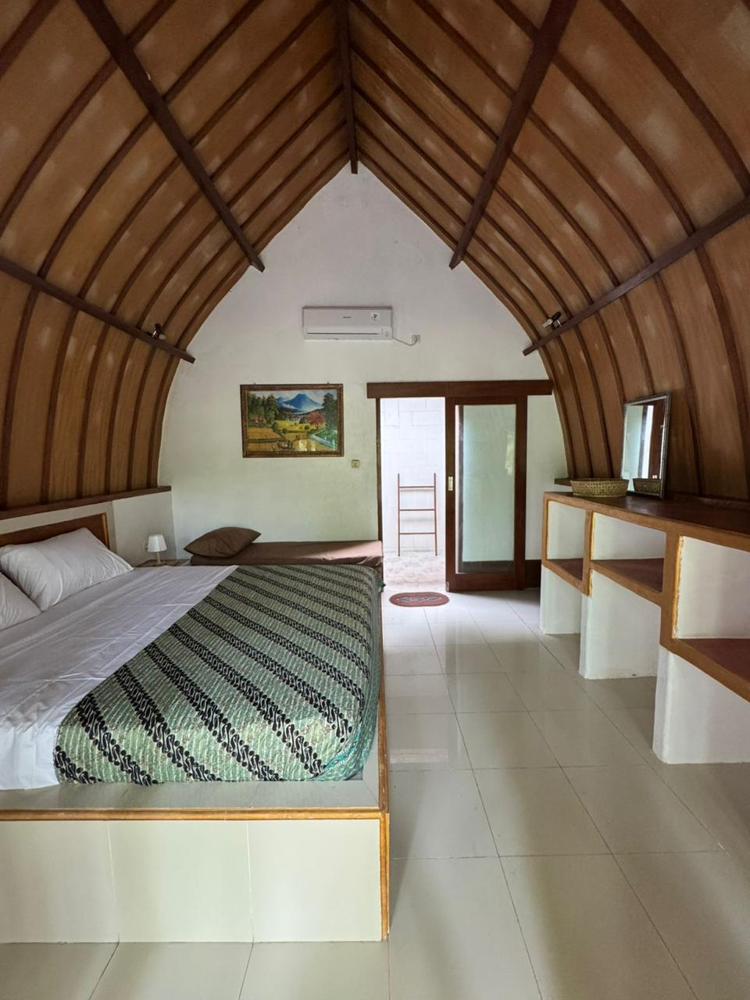
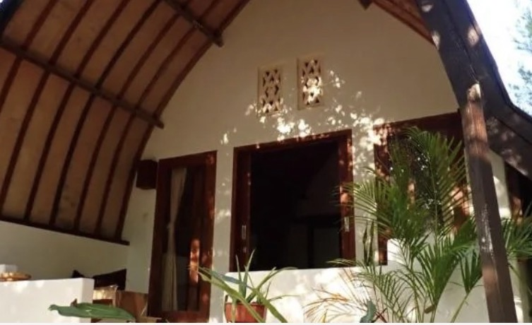
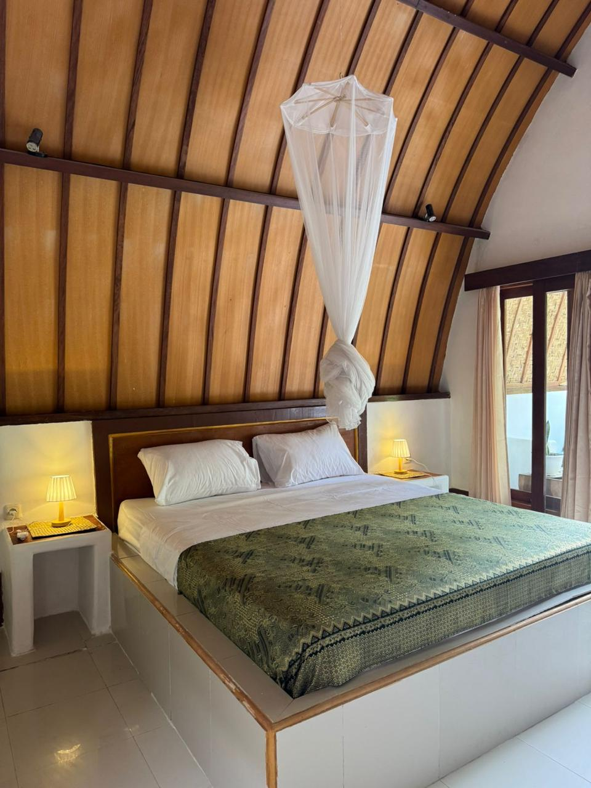
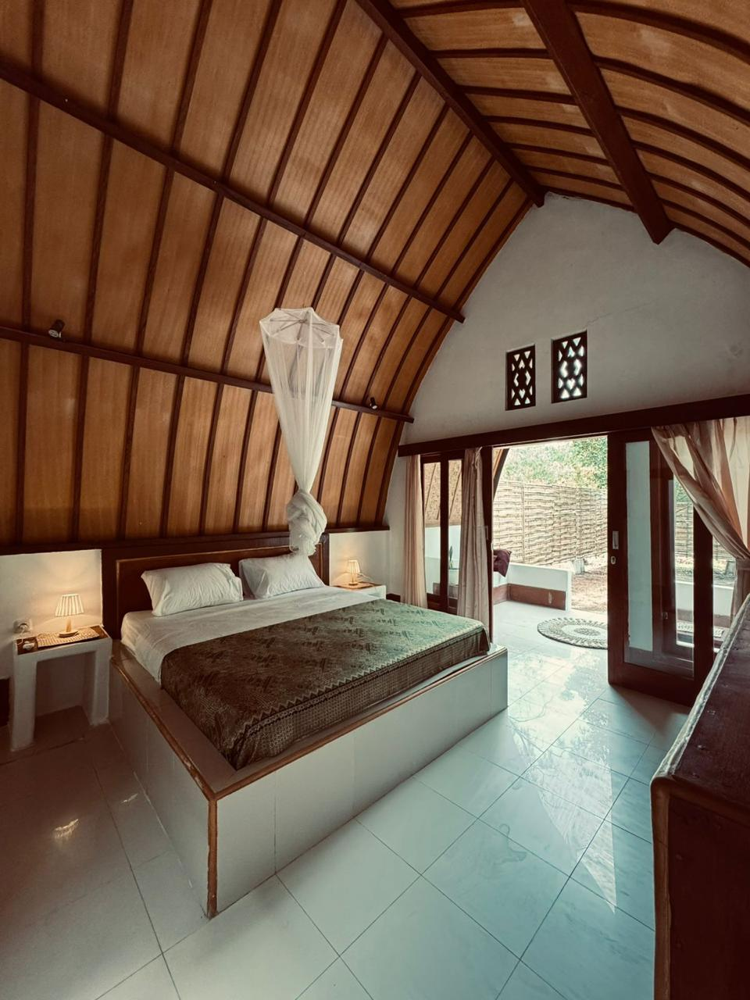
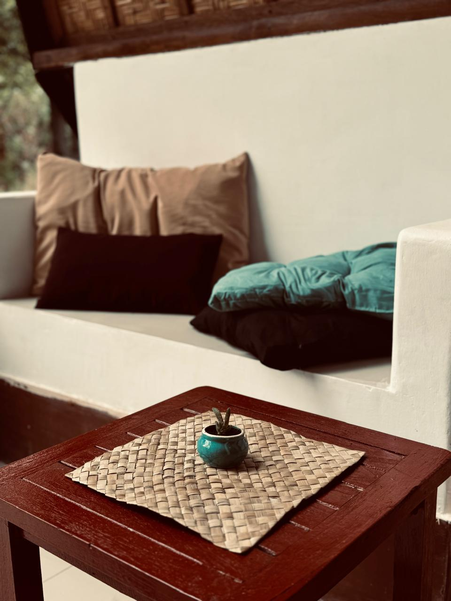
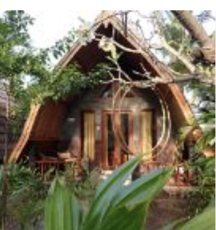
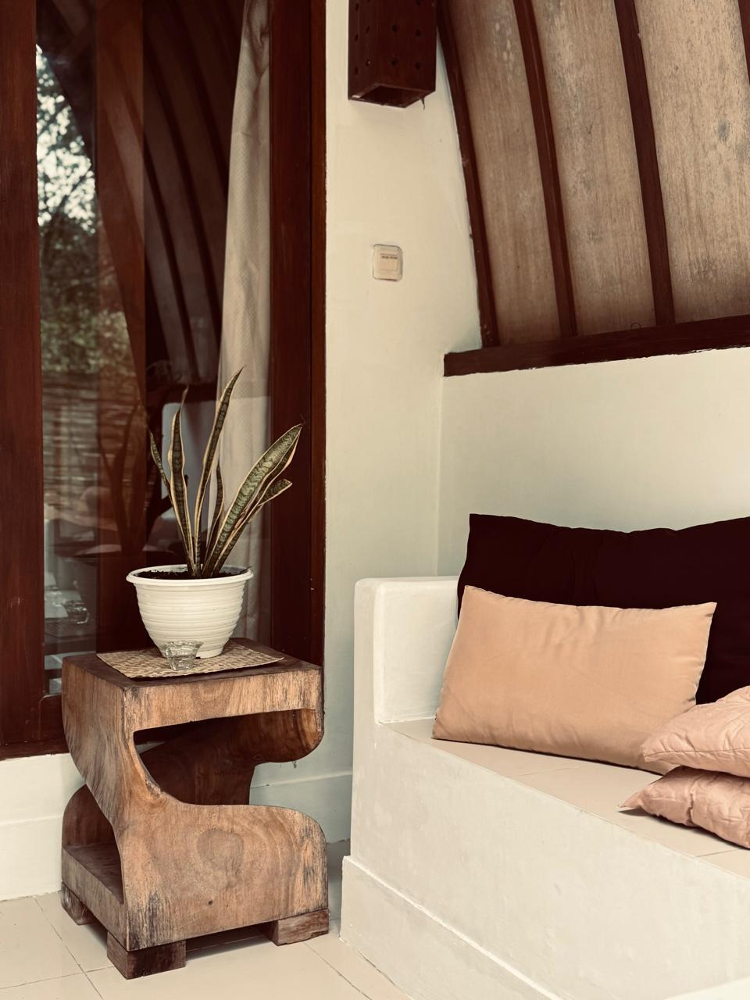
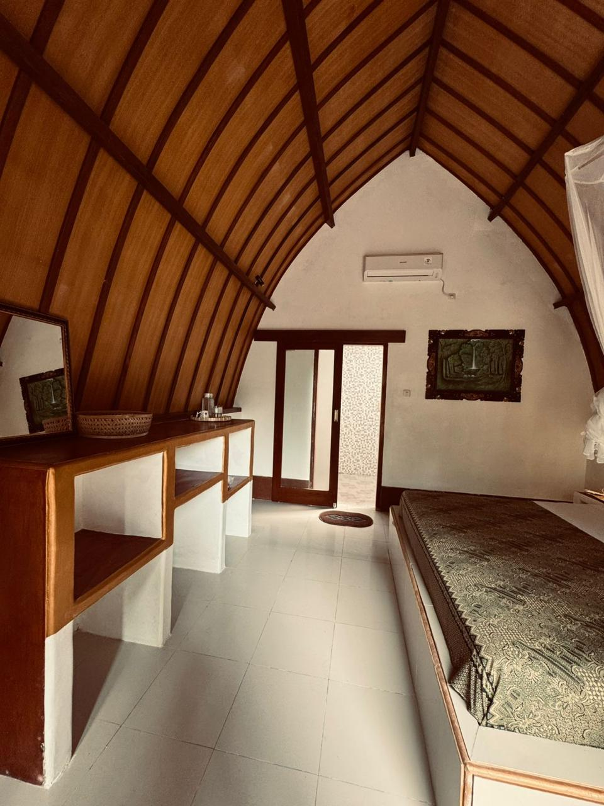
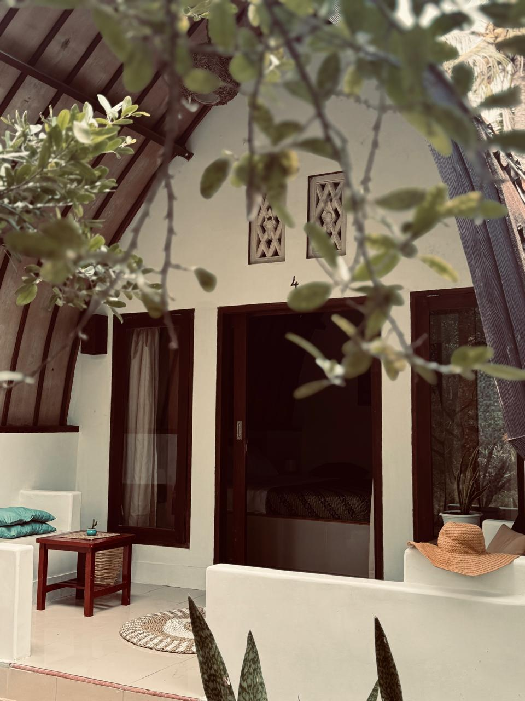
Meno is the smallest of the three Gilis—think bicycles, beach time, and snorkelling routes the busy islands borrowed their postcards from.
Turtle Point and east-coast snorkelling deliver daily encounters with green and hawksbill turtles over gardens of hard coral.
Meno Wall, Macro Heaven, and classic Gili sites sit minutes away by boat—often with jacks, rays, and seasonal surprises.
Pedal the island loop in under two hours, hop a cidomo cart, or simply walk the shoreline—no scooters, no gridlock.
Approximate location—meet us near Gili Meno harbour for walking directions.
Inspired by what neighbouring resorts and local operators showcase—mix lazy beach days with turtles, diving, horses, and golden-hour hops.
Photos below are real scenes from Gili Meno (Wikimedia Commons). Arrange trips through local operators once you arrive.
Shallow sites along Meno’s east coast suit beginners—early mornings mean glassy water and fewer day-trip crowds.

Fun dives, refreshers, and certifications—often bundled by harbour-area centres with small groups and nitrox options.

Join shared or private outriggers for golden-hour cruising, or hop a quick shuttle to Trawangan and Air for dinner.

Several Meno stables offer sunrise or sunset beach rides—book directly and choose operators with transparent horse-care policies.

Paddle the sheltered leeward side, drift over coral bommies, or peek at the underwater statues from the surface on calmer days.

Combine a walk through Meno’s salt-flats interior with the island’s small sanctuary—ideal if you want shade between beach sessions.
Activity images are from Wikimedia Commons · Category:Gili Meno; authors license them under Creative Commons—see each file page for attribution details.
Rising Sun Bungalows is operated by Gili Meno Center—your shortcut to tanks on site, timely boats, and dive briefings rooted in years on Meno’s sites.

500.000 IDR per night · No payment on this form—we confirm by email, usually within half a day.